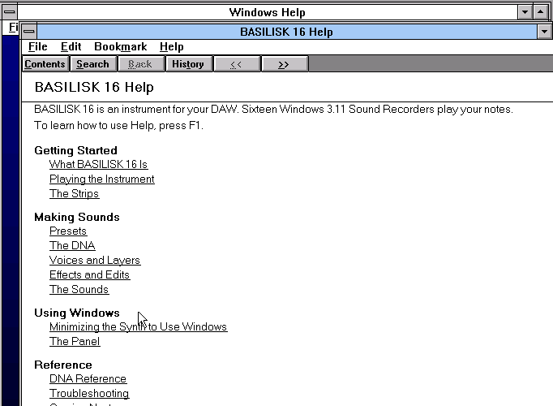
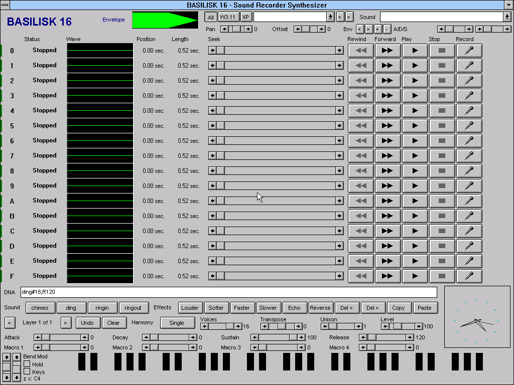

BASILISK 16 is an instrument plugin for your DAW. It runs Windows for Workgroups 3.11 inside the plugin, opens sixteen copies of Sound Recorder, and plays your notes on them. Every sound is built with Sound Recorder's own menu commands. The plugin never makes a sound of its own, and everything on this page was recorded from it.
Loading. Windows for Workgroups 3.11 resumes, its sixteen Sound Recorders lose their title bars and line up, and the first preset plays.
A sound is a DNA, one line of text: layers of Sound Recorder commands, then settings. chimesE+;R900 is CHIMES.WAV with Add Echo and Increase Volume, and a 900 ms release. Type one into the editor, pick a preset, or click the Effects buttons.
Up to 8 layers per sound, each on its own recorders, with its own start offset, pan, level, transpose, harmony and unison. One note can sound up to 16 recorders.
Automatable from the DAW. The DNA says what each one moves: a layer's level, pan, offset, transpose, unison spread, envelope speed or echo count. The mod wheel adds to Macro 1.
Each layer can have drawn volume and pan envelopes of up to 8 points. A seventeenth Sound Recorder draws the selected envelope in its green wave view.
Five octaves of Windows push-button keys, Bend and Mod scroll bars, and Hold. Turn on Keys to play from the computer keyboard. Incoming MIDI holds the keys down and moves the wheels.
A new sound is built in front of you with Sound Recorder's own menus: Increase Speed, Add Echo, Reverse, Insert File, Mix with File, Copy and Paste. The recorder's row lights up and its status line names each command as it runs.
510 public-domain and CC0 sounds (pianos, bells, choirs, bowls, birds, weather, machines) on a drive of their own, used by name: marimba_c4E#16. Collages mix and insert them at any time in a sound: ding@t200Mthunder_rumble.
76 programs, in your DAW's preset list and in a Preset drop-down inside Windows. Saving a preset saves its DNA, so a sound copied from this page pastes straight into the editor.
render311 renders a DNA plus a MIDI file to a WAV through the real machine, faster than real time and bit-identical on Windows, macOS and Linux. The preset demos below were made with it, except the six macro presets, which were rendered by the VST3 in a test host with Macro 1 automated.
BASILISK 16 has a help file for Windows 3.11's own help viewer, WINHELP.EXE. It has a contents page, Search, glossary popups, the strips and panels explained, and a full DNA reference. It is compiled from plain text by a small WinHelp compiler written for this project, without Microsoft's tools. These are screenshots of it in the real Windows 3.11 viewer. It is written and tested, and ships in a coming release.

The sound of a preset is made by Windows' own programs from Windows' own files. What we added plays those sounds as notes and shapes them.
Every DNA step is one of Sound Recorder's own menu commands, run by the real Sound Recorder (SOUNDREC.EXE) in its own process, on its own buffer:
Our program in Windows only picks the menu items and moves the position slider; it never edits the samples.
The Windows sounds are files from the Windows installs themselves:
ding is the 3.x recording, ding-xp XP's.CC0 PD The library disc is added material: 249 CC0 and public-domain recordings, each credited on the disc (hover a badge in the preset list). For 3.11 they are converted to 22050 Hz 16-bit mono so Sound Recorder 3.1 can open them.
Our program presses the recorder's own Rewind and Play. Sound Recorder plays its own buffer through the normal Windows sound calls. We added a 32-voice sound card to the emulator, and a Windows 3.11 driver for it; the card sets each voice's rate (the pitch, with 4-point Hermite interpolation), volume, pan and envelope.
The emulator is DOSBox Pure, with our sound card added. The plugin never makes a sound of its own. It delays the emulated machine's output by a fixed, reported latency, resamples it to your session's rate, and applies Output Gain.
BASILISK 16 1.3.0 brings a library of 1,039 presets in 17 sound packs, such as Workgroup House Edition, Techno Server 4.0, ROM Reference Library, Lifestyle Aesthetics Pack and Electromechanical Heritage. The owner went through all of them and rated each one. The thirty favourites are below, each with its demo, its recipe and the sounds it uses. They are not in a released plugin yet.
| 3.11 originals | BASILISK 16's own: Windows 3.11's CHIMES, DING, RINGIN and RINGOUT, sped up, slowed, reversed, echoed, stacked and spliced. |
| Library disc | Layered instruments built from the library disc's sounds: Glass Piano, Bowl Swell, Cello Breath, Kalimba Train and more. |
| Factory | The factory presets. Many use Windows XP's sounds, which BASILISK 16 carries in C:\XPSOUNDS. |
Each preset plays a short phrase of the kind it is made for: pads play slow chords, basses a bassline, plucks an arpeggio, bells a melody. The phrases are MIDI, rendered through the real plugin, then only levelled to the same loudness. Presets that sound wrong are marked, not hidden. Under each name is its recipe: the DNA in Sound Recorder's words, on one line when it fits, else a line per layer. Copy DNA copies the exact string.
No demos here yet.
BASILISK 16's download is complete: the plugin, Windows 3.11 and its Sound Recorders, the library disc and the batch renderer, with nothing else to install or find.
Windows 3.11's SOUNDREC.EXE. VST3 for Windows and macOS, and AU on macOS.
BASILISK 16 runs in this page: the plugin's own engine, compiled for the browser, with the same Windows for Workgroups 3.11 and the same sixteen Sound Recorders. It resumes from the moment the synth finished assembling, so it is ready as soon as it has loaded. Nothing is downloaded until you press the button.

Windows 3.11 in your browser, about 5 MB. Sound on.
Click the screen, then use Windows: the on-screen keys, Keys to play from the computer keyboard (a w s e d f t g y h u j k, z/x change octave), the Preset and Sound lists, the DNA line and every Sound Recorder button. Web MIDI is optional: it plays notes and follows the mod wheel and pitch bend. It pauses while the page is hidden, and stops itself if the browser cannot keep up.
Best on a desktop or laptop computer: it needs a mouse, a keyboard and a fast processor.
All downloads and install stepsSource
Windows for Workgroups 3.11, Windows 3.1 and Windows XP sounds, and Sound Recorder are Microsoft's, included as part of this art project. The Windows images came from Windows for Workgroups 3.11 and Windows XP Professional SP3 as preserved by the Internet Archive. The library disc's sounds are public domain and CC0; each one's source is listed on the disc. The emulators are QEMU and DOSBox Pure (GPLv2), and the plugins are built with DPF.